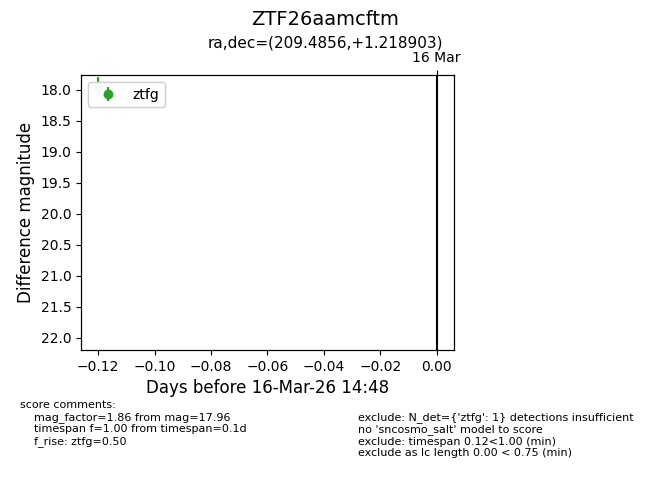
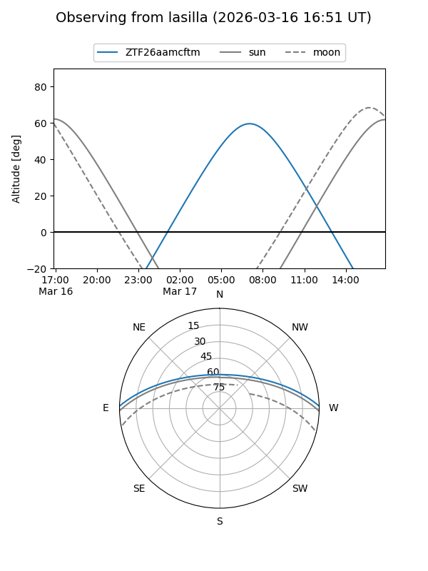
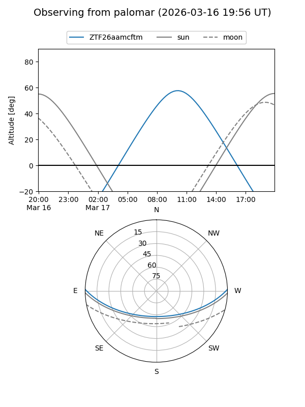

ZTF26aamcftm
Target ZTF26aamcftm at 2026-03-16 14:50
Aliases and brokers:
FINK: link
Lasair: link
ALeRCE: link
alt names
ZTF26aamcftm (ztf,fink_ztf)
Coordinates:
equatorial (ra, dec) = 209.4856,+1.21890
equatorial (HMS+DMS) = 13:57:56.54,+01:13:08.05
galactic (l, b) = (337.3250,+59.57429)
Flags:
Photometry:
last ztfg=17.96
1 ztfg detections
Lightcurve

Visibility


Additional plots